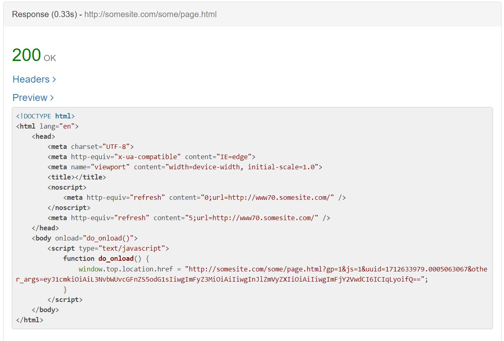
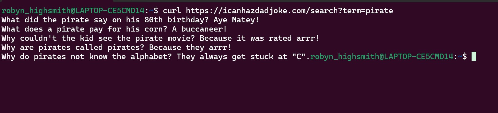
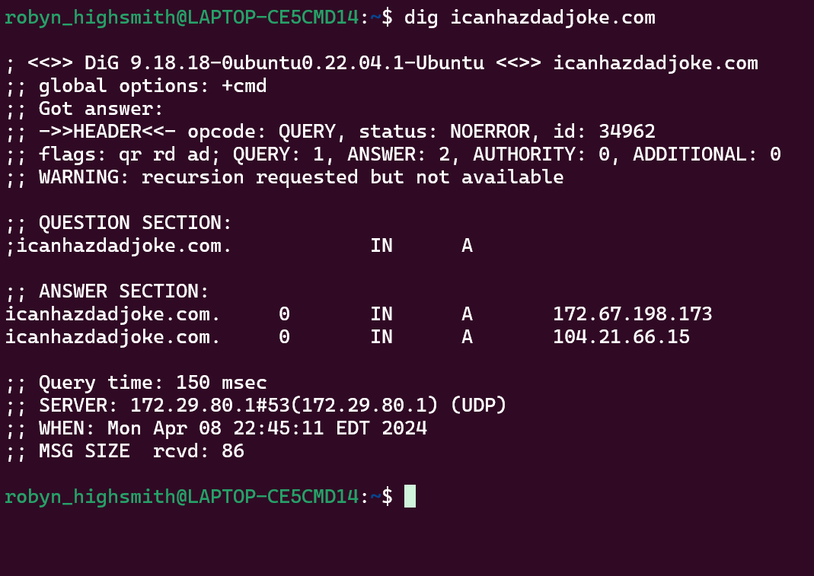

What is HTTP?
It is a protocol that describes how requests should be made to servers.
What is a URL?
A URL is a uniform resource location. It is a unique identifier for a web page.
What is DNS?
It is the URL in plain language used to connect to a webpage. It converts to the IP address of the webpage.
What is a query string?
A query string is at the end of the URL in a get request and is the item/topic of a search request.
What are two HTTP verbs and how are they different?
Get and Post. Get requests information and Post request change/create information.
What is an HTTP request?
A request made by the client machine to the server following the HTTP protocol.
What is an HTTP response?
Is the response sent back to the client machine from the server.
What is an HTTP header? Give a couple examples of request and response headers you have seen.
A header is an area of a request that you can used to specify how you would like to receive the response. Language and format type.
What are the processes that happen when you type What are the processes that happen when you type “http://somesite.com/some/page.html” into a browser?
1. Using curl, make a GET request to the icanhazdadjoke.com API to find all jokes involving the word "pirate".
2. Using dig to find what the IP address is for icanhazdadjoke.com
2. Make a simple web page and serve it using python3 -m http.server. Visit the page in a browser.